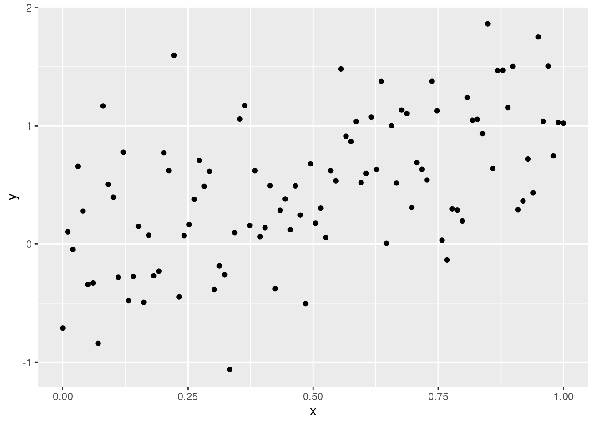
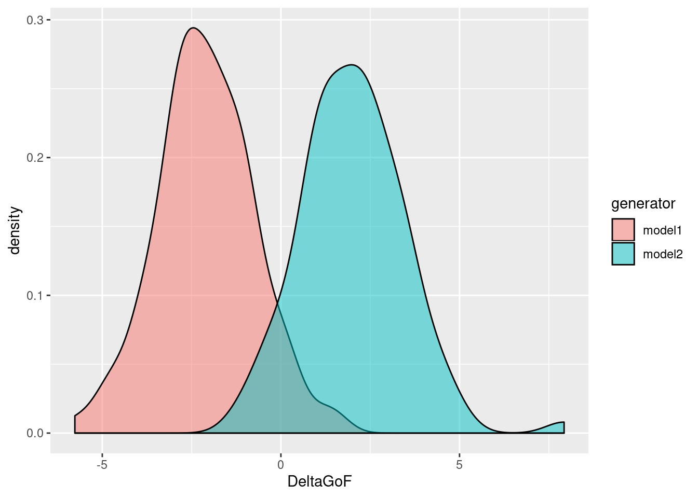
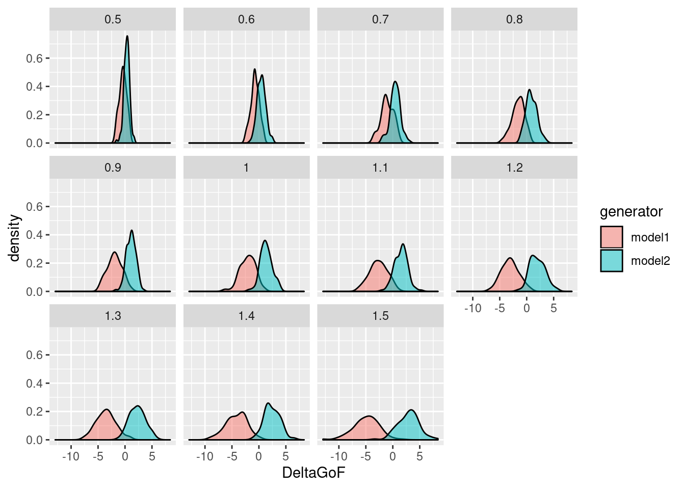

vignettes/introduction.Rmd
introduction.Rmdpbcm is an R package that implements both data-informed and data-uninformed versions of the Parametric Bootstrap Cross-fitting Method (PBCM; Wagenmakers et al. 2004), a general-purpose technique for binary model selection. Some auxiliary routines, such as decision through k nearest neighbours classification (Schultheis & Singhaniya 2015), are also implemented.
You can install the released version of pbcm from GitHub with:
devtools::install_github("hkauhanen/pbcm")
Given two models (henceforth, model 1 and model 2), the PBCM generates synthetic data from each model and cross-fits the models to these synthetic data. The result is two distributions (one with each model as the generator) of the statistic \(\Delta GoF = GoF_1 - GoF_2\), where \(GoF_i\) is the goodness of fit of model \(i\). The model parameters may be determined from empirical data, in which case we talk of the data-informed PBCM, or specified a priori, in which case what we have at hand is the data-uninformed PBCM.
The data-informed version of the procedure looks as follows (adapted from Wagenmakers et al. 2004). Given an empirical dataset \(D\):
The data-uninformed procedure differs from this in that the model realizations are decided by an a priori selection of model parameters rather than being estimated from empirical data.
See Wagenmakers et al. (2004) for further details.
Suppose we have the following data:
x <- seq(from=0, to=1, length.out=100) mockdata <- data.frame(x=x, y=x + rnorm(100, 0, 0.5)) library(ggplot2) g <- ggplot(mockdata, aes(x=x, y=y)) + geom_point() print(g)

And suppose we wish to find out which of the following two models best explains these data:
where \(\epsilon\) is some Gaussian noise.
The first thing to do is to define our own routine for fitting these models. We could use a dedicated routine for each model, but because of the simplicity of the example and the obvious parallels between the two models, we’re in fact going to parameterize a single function. We’re going to use R’s implementation of nonlinear least squares, nls, here:
myfitfun <- function(data, p) { res <- nls(y~a*x^p, data, start=list(a=1.1)) list(a=coef(res), GoF=deviance(res)) }
Note that myfitfun takes a (mandatory) data argument which is used to pass the data the models are fit to, and that it returns a list, one of whose elements holds the goodness of fit (GoF).
To generate the parametric bootstrap, we need another function that generates synthetic data based on a model parameterization:
mygenfun <- function(model, p) { x <- seq(from=0, to=1, length.out=100) y <- model$a*x^p + rnorm(100, 0, 0.5) data.frame(x=x, y=y) }
This function takes a mandatory model argument, which is used to pass around model realizations (the output of the myfitfun function).
Now we’re set to actually run the bootstrap:
myboot <- pbcm::pbcm.di(data=mockdata, fun1=myfitfun, fun2=myfitfun, genfun1=mygenfun, genfun2=mygenfun, reps=100, args1=list(p=1), args2=list(p=2), genargs1=list(p=1), genargs2=list(p=2), print_genargs=FALSE)
Here, args1 and args2 hold arguments passed to myfitfun, while genargs1 and genargs2 hold arguments passed to mygenfun. Let’s take a glimpse at the result:
head(myboot) #> rep generator GoF1 GoF2 DeltaGoF #> 1 1 model1 33.23681 35.91967 -2.6828573 #> 2 2 model1 29.06700 31.68327 -2.6162661 #> 3 3 model1 26.06246 26.65009 -0.5876221 #> 4 4 model1 30.22774 30.93135 -0.7036111 #> 5 5 model1 17.44007 19.54460 -2.1045278 #> 6 6 model1 24.77906 25.96375 -1.1846878
We can easily produce a nice plot of the DeltaGoF distributions:
g <- ggplot(myboot, aes(x=DeltaGoF, fill=generator)) + geom_density(alpha=0.5) print(g)

Since the definition of DeltaGoF is GoF1 - GoF2, and since we have defined GoF as the residual sum of squares of the regression (see our definition of myfitfun above), so that smaller is better, we find that model 1 tends to fit data generated by itself better than model 2, and vice versa (as expected). Now, which model is the better explanation of the original mockdata? To answer this, we first need the value of DeltaGoF for the original data:
emp <- pbcm::empirical.GoF(mockdata, fun1=myfitfun, fun2=myfitfun, args1=list(p=1), args2=list(p=2)) print(emp) #> GoF1 GoF2 DeltaGoF #> 1 25.86463 26.55252 -0.6878828
This suggests that model 1 is the true generator, since the empirical value of DeltaGoF would appear to be closer to that distribution. To get a more quantitative angle on this, we can use e.g. k nearest neighbours (k-NN) classification to decide the issue:
pbcm::kNN.classification(df=myboot, DeltaGoF.emp=emp$DeltaGoF, k=10) #> k dist_model1 dist_model2 decision #> 1 10 0.4032805 2.717087 model1
Comparing the empirical value of DeltaGoF to its 10 nearest neighbours in both bootstrap distributions, the distance to the model 1 distribution is smaller, hence model 1 is selected.
We can even try different values of k to see if that has any effect on the decision:
pbcm::kNN.classification(df=myboot, DeltaGoF.emp=emp$DeltaGoF, k=c(1, 10, 50, 100)) #> k dist_model1 dist_model2 decision #> 1 1 1.643713e-05 0.01607711 model1 #> 2 10 4.032805e-01 2.71708684 model1 #> 3 50 3.755798e+01 156.25962474 model1 #> 4 100 3.802791e+02 939.11631103 model1
Suppose we know that parameter values in the region \(a \in [0.5, 1.5]\) are particularly empirically meaningful for our two models. We can use the data-uninformed version of PBCM to examine the two models’ confusability within this region of the parameter space by conducting a systematic sweep.
This time, the data generating function need not rely on a model but rather on a specific value of the model parameter. Hence we make a new version of this function:
mygenfun.du <- function(a, p) { x <- seq(from=0, to=1, length.out=100) y <- a*x^p + rnorm(100, 0, 0.5) data.frame(x=x, y=y) }
The model fitting function, myfitfun, needs no modifications.
To run a data-uninformed PBCM analysis on a particular value of \(a\), we can do the following:
myboot <- pbcm::pbcm.du(fun1=myfitfun, fun2=myfitfun, genfun1=mygenfun.du, genfun2=mygenfun.du, reps=100, args1=list(p=1), args2=list(p=2), genargs1=list(a=1.0, p=1), genargs2=list(a=1.0, p=2))
See that something happened:
head(myboot) #> genargs1_a genargs1_p genargs2_a genargs2_p rep generator GoF1 GoF2 #> 1 1 1 NA NA 1 model1 24.64587 25.68707 #> 2 1 1 NA NA 2 model1 22.53091 24.87516 #> 3 1 1 NA NA 3 model1 27.87895 28.68706 #> 4 1 1 NA NA 4 model1 23.53659 26.09062 #> 5 1 1 NA NA 5 model1 21.48443 22.27010 #> 6 1 1 NA NA 6 model1 25.22884 27.56250 #> DeltaGoF #> 1 -1.0411971 #> 2 -2.3442483 #> 3 -0.8081104 #> 4 -2.5540277 #> 5 -0.7856663 #> 6 -2.3336532
A parameter sweep is easy to accomplish using R’s lapply:
sweep <- lapply(X=seq(from=0.5, to=1.5, by=0.1), FUN=function(X) { pbcm::pbcm.du(fun1=myfitfun, fun2=myfitfun, genfun1=mygenfun.du, genfun2=mygenfun.du, reps=100, args1=list(p=1), args2=list(p=2), genargs1=list(a=X, p=1), genargs2=list(a=X, p=2)) })
The output of lapply is a list, so let’s gather this into a data frame for convenience and add a column that indicates the value of the \(a\) parameter:
sweep <- do.call(rbind, sweep) sweep$parameter <- ifelse(is.na(sweep$genargs1_a), sweep$genargs2_a, sweep$genargs1_a)
Finally, to visualize the results of the sweep:
g <- ggplot(sweep, aes(x=DeltaGoF, fill=generator)) + geom_density(alpha=0.5) + facet_wrap(.~parameter) print(g)

Schultheis, H. & Singhaniya, A. (2015) Decision criteria for model comparison using the parametric bootstrap cross-fitting method. Cognitive Systems Research, 33, 100–121. https://doi.org/10.1016/j.cogsys.2014.09.003
Wagenmakers, E.-J., Ratcliff, R., Gomez, P. & Iverson, G. J. (2004) Assessing model mimicry using the parametric bootstrap. Journal of Mathematical Psychology, 48(1), 28–50. https://doi.org/10.1016/j.jmp.2003.11.004